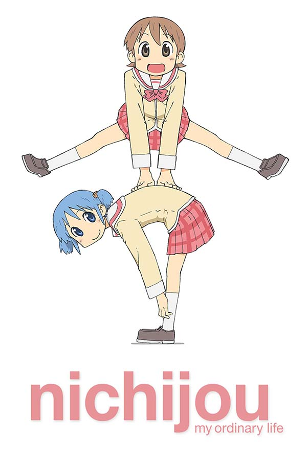

Rascal Does Not Dream of Bunny Girl Senpai

Adolescence Syndrome, a supernatural phenomenon that manifests in all manner of aliments. With Sakuta's friends disappearing, looping through time, and developing multiple personalities, can he solve the mysteries of this illness before it’s too late?
Land of the Lustrous

Long ago, Earth was struck by six meteorites, leaving a lone island in their wake. 28 crystalized lifeforms now reside on this false oasis, bombarded with attacks from the moon by the Lunarians, who seek to harvest the gems to create weapons and jewerly.
Mushoku Tensei

The grandfather of Isekai. A hopeless shut-in finds himself in a fantasy world after years of bullying and regret. Will the now newborn boy named Rudeus be able to connect with his loving family and find the resolve to venture out and give his life a second chance?
Eighty-Six

According to the Republic of San Magnolia, their ongoing war against the Giadian Empire has no casualties. However, the oppressed Eighty-Six are forced to fight while silver-haired Alba live oblivious in safety. Vladilena Milizé, assigned to command the elite squadron Spearhead, aims to win the war while undoing this injustice.
Fruits Basket

Tohru's mother used to tell stories of the Chinese Zodiac animals. Now, Tohru lives in a tent unlawfully on the Soma estate. After being discovered by classmate and "Prince" Yuki, she learns of the Soma's whimsical secret: they transform into the zodiacs when hugged. The dark historic ties of the Soma clan begin to unravel as Tohru walks among gods.
Sonny Boy

Adrift! A class of students, their classroom and the entire school are suddenly swallowed up by a pitch black void. Despite the student council's attempts to enforce order, as more students realize their new-found powers the conflicts grow. With Nozomi's ability Compass, a trio tries to follow the light home in this melancholic adventure.
Shadows House

The Shadows are a family of nobles who reside in a colossal manor deep within the mountains. When a Shadow child is nearly of-age, they are assigned a Living Doll. Living Dolls are meant to serve and ask no questions. However, with the wealth of secrets that is Shadows House, curiosity may yet get the better of Emilico.
Wonder Egg Priority

As suicide rates rise in Japan, one teen girl seeks sollace in the whispers of a beetle and a mysterious egg vending machine.
Darling in the Franxx

Description
Horimiya

Description
Girls Last Tour

A snowy, gun-filled, post-apocalyptic world. For Chito and Yuri, it’s home. Riding around in their miniature tank, they struggle to survive while making the most of the time they have together.
Bloom Into You

Description
Love, Chunibyo and other Delusions

Description
Nichijou

The normal everyday life of 3 highschool girls, a robot, a scientist, and a cat.
Clannad

Description
Angel Beats!

Sometimes, the only way to fight against God's will in the afterlife is with a band. A band of teens who all had untimely deaths, that is.